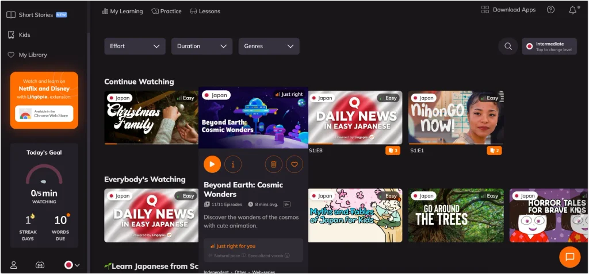
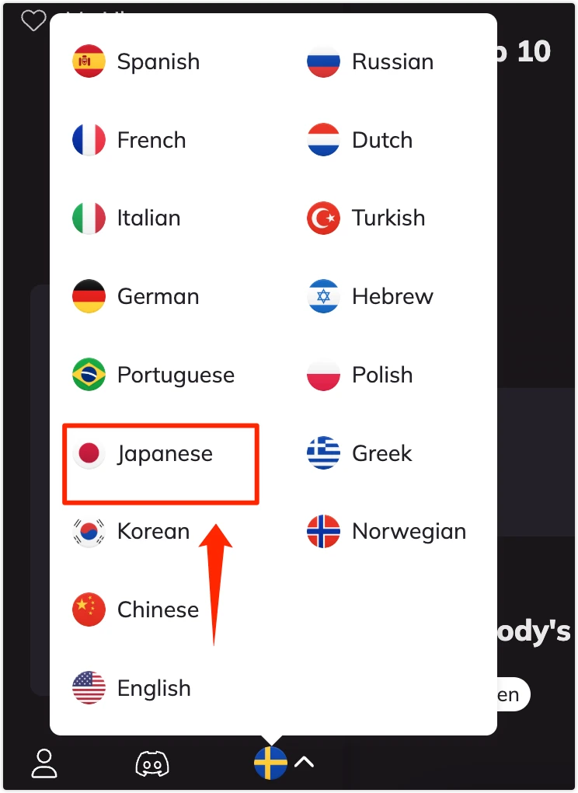
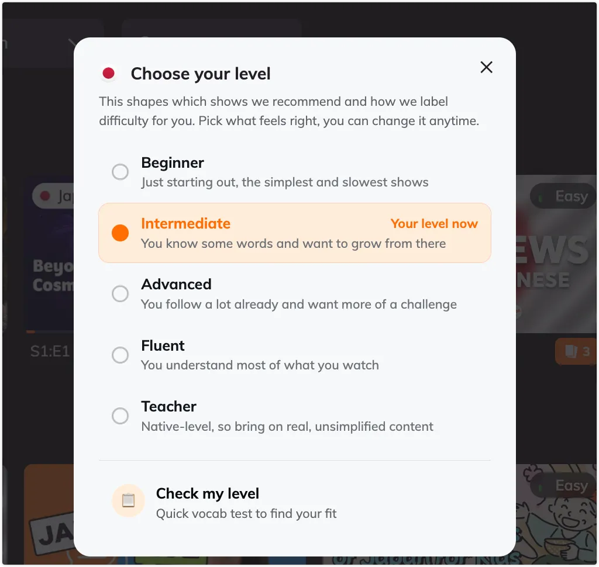
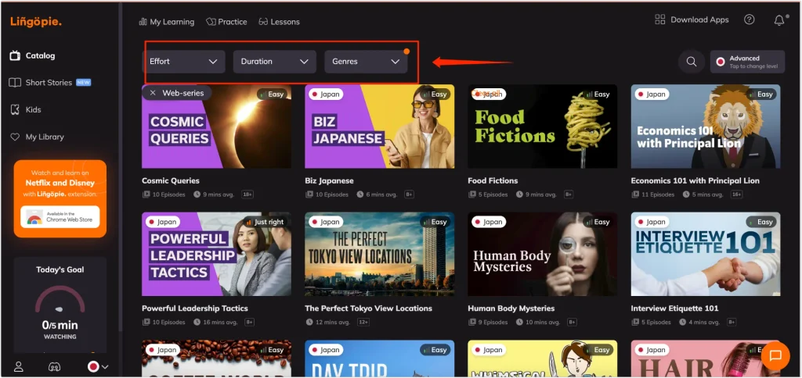
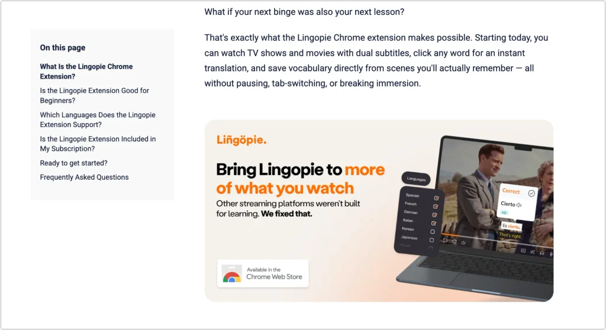

Affiliate disclosure: This article contains affiliate links. If you sign up through my link, I may earn a commission at no extra cost to you.
Key Takeaways
- Lingopie has a Japanese catalog, but most content is beginner-level and platform-produced — not Japanese dramas or anime
- The core feature is clickable dual subtitles, but Japanese-specific challenges (no word spaces, verb conjugation) affect how well it works
- Most useful as a supplement for lower-intermediate learners; advanced learners will get more value from the Chrome extension on Netflix
I tried Lingopie specifically for Japanese to see how useful that idea is in practice. This review covers the catalog, the learning tools, and whether the experience actually holds up for Japanese learners — including the parts that work differently for Japanese than they do for other languages.
What Is Lingopie?

Lingopie is a language-learning platform built around TV shows, movies, short videos, and other native-language content.
Instead of completing traditional textbook-style lessons, you watch content in the language you are learning and use built-in tools when you get stuck.
The player includes clickable subtitles, translations, dual subtitles, flashcards, quizzes, playback controls, and vocabulary review tools. Words you click can be added to your word bank for later review.
The basic learning loop looks like this:
Watch → click unfamiliar words → understand them in context → save vocabulary → review later
That immediately makes Lingopie feel different from apps built around isolated vocabulary drills. It sits somewhere between a streaming service and a language-learning app — and for Japanese specifically, that combination raises some interesting questions about how well it handles a language that works very differently from Spanish or French.
Does Lingopie Have Japanese?


Yes.
Japanese is one of the languages you can learn on Lingopie. I selected it directly from the language menu in my account, and it appeared as my active language at the bottom of the interface.
Lingopie has a Japanese-specific section of the catalog and promotes Japanese content including TV shows, movies, dramas, comedy, and beginner-friendly learning videos.
The Japanese Catalog: What I Actually Found
When I opened the Japanese catalog, the interface showed three filter dropdowns at the top — Effort, Duration, and Genres — and a level indicator in the top right corner showing Intermediate, with an option to change it.
The left sidebar had four sections: Catalog, Short Stories (marked as new), Kids, and My Library.
The main area was organized into rows. My Continue Watching row showed:
- Christmas Family — Japan, Easy
- Beyond Earth: Cosmic Wonders — Japan, Just right
- Daily News in Easy Japanese — Japan, Easy (labeled Powered by Lingopie)
- NihonGO Now! — Japan, Easy
The Everybody’s Watching row below showed:
- Daily News in Easy Japanese — Easy
- Japanese 101 — Easy
- Myths and Fables of Japan for Kids — Easy
- Go Around the Trees — Easy
Most of the homepage content is labeled Easy
Almost every title on the homepage carried an Easy tag. The only exception in my Continue Watching row was Beyond Earth: Cosmic Wonders, which showed as Just right at Intermediate level.
The Easy / Just right / Hard system adjusts relative to your set level, so the same content would display differently for a beginner versus an intermediate learner. This makes the difficulty labels more useful than a fixed scale.
A significant portion of the catalog is Lingopie-produced

Daily News in Easy Japanese is explicitly labeled Powered by Lingopie, meaning Lingopie produces this content itself rather than licensing it from Japanese broadcasters. Japanese 101 and NihonGO Now! appear to be structured teaching shows hosted by presenters — created specifically for learners.
This is worth knowing before you sign up. The Japanese catalog is not a collection of Japanese dramas or anime from Japanese broadcasting. A significant portion of what appears on the homepage is learning-focused content made for the platform.
For beginners, this is actually an advantage. Daily News in Easy Japanese and NihonGO Now! are designed to be accessible from an early stage, with controlled vocabulary and clear speech. For intermediate or advanced learners who want to watch content that Japanese people actually watch, the catalog will feel more limited.
The Kids section
The sidebar includes a dedicated Kids section. For Japanese learners, this is worth taking seriously.
Kids’ content in Japanese typically features slower speech, simpler sentence structures, high-frequency vocabulary, and strong visual context. Learners who would struggle with an adult drama can use the Kids section as a genuine entry point — the content is learner-appropriate regardless of your age.
The Chrome extension for Netflix and Disney+

There is a promotion in the sidebar for a Chrome extension that brings Lingopie’s learning tools into Netflix and Disney+.
For intermediate and advanced learners, this may be more valuable than the in-house catalog itself. It means you can use Lingopie’s clickable subtitles on a much larger library of actual Japanese content — dramas, anime, films — rather than being limited to Lingopie’s own beginner-focused videos.
How Learning Japanese With Lingopie Works
Dual subtitles and clickable words
The player supports Japanese and English subtitles at the same time. Each word in the Japanese subtitle is clickable, giving you an instant translation and basic information about the word without pausing the video.
This is the central feature of the platform. For most languages, it works straightforwardly. Japanese adds a layer of complexity: words are not separated by spaces, so the system has to identify word boundaries automatically before any clicking is possible.
Lingopie handles this through tokenization — algorithmically splitting the continuous Japanese subtitle text into clickable units. For common vocabulary and standard sentence structures, this works reasonably well. For compound expressions or less common patterns, you may occasionally find that a click selects more or less than you intended. It is worth testing on a few different videos during the free trial to get a feel for how it behaves with the content you want to watch.
Verb conjugation and dictionary lookup
Japanese verbs change form constantly. You will encounter 食べました in a subtitle, but the dictionary form is 食べる. 行った becomes 行く. 見ている becomes 見る. 分からない becomes 分かる.
Lingopie’s word lookup connects clicked words to translations. For straightforward vocabulary, this is useful. For conjugated verb forms, the quality of the lookup depends on how well the system recognizes the base form — and this varies. If you click a conjugated verb and get a clean dictionary entry with the base form and a clear meaning, the tool is doing its job. If it returns nothing useful or gives you a partial match, you will need to look it up separately.
Furigana
Furigana — the small hiragana characters above kanji that show pronunciation — is one of the most practically important features for Japanese learners below around N3 level. Without it, a subtitle containing unfamiliar kanji is difficult to even read aloud.
Lingopie’s subtitles display Japanese text, and the click-to-translate feature covers meaning. Whether furigana appears on subtitles automatically or as a toggle option is something to check during your trial if reading support is a priority at your current level.
Vocabulary saving and review
Words you click can be saved to your word bank and reviewed later through flashcards and quizzes. This connects the watching experience directly to vocabulary study, which is one of the things that separates Lingopie from watching Japanese content on a regular streaming service.
The review system is straightforward: saved words come back as flashcards, and Lingopie prompts you to review them over time. It is not as sophisticated as Anki’s spaced-repetition algorithm, but it is more integrated — the vocabulary is tied to the content where you heard it, which helps with memory in a way that isolated flashcard decks often do not.
Playback controls
Lingopie includes slow playback and sentence looping. Both are useful for Japanese specifically because natural speech speed is one of the first barriers learners run into with native content. Being able to slow a line down or loop it until you can hear the individual words clearly makes a noticeable difference to how much you actually absorb from each session.
Why Japanese Is a Different Test Than Most Languages
A feature can work smoothly for Spanish and still feel less useful for Japanese. Three challenges make Japanese worth examining separately:
No spaces. Tokenization is not something most language-learning platforms have to think about for European languages. For Japanese, it is foundational to everything else.
Verb conjugation. The gap between the form you see in a subtitle and the form in a dictionary is constant. A tool that handles conjugated forms well is significantly more useful than one that doesn’t.
Kanji reading. Reading support matters at a stage where learners can follow vocabulary meaning but cannot yet read unfamiliar kanji aloud. Furigana bridges that gap in a way that a translation alone does not.
These three factors are what determine whether Lingopie is genuinely better than alternatives for Japanese learners, rather than simply adequate.
Is Lingopie Worth It for Japanese? Comparing It to Alternatives
Lingopie vs. watching Japanese on Netflix directly
Netflix has a much larger Japanese library — real dramas, anime, variety content, and films that Japanese audiences actually watch. Its limitation is the absence of any learning layer. You can add Japanese subtitles, but you cannot click words, save vocabulary, or loop individual sentences.
Lingopie’s tools are designed to lower that friction. The Chrome extension is particularly relevant here: if it works reliably for Japanese Netflix content, it effectively gives you Lingopie’s learning layer on top of Netflix’s library — which is a compelling combination.
Lingopie vs. Language Reactor
Language Reactor is a free Chrome extension that adds dual subtitles and word lookup to Netflix and YouTube. For Japanese it includes furigana support. Its main advantage is that it costs nothing at the basic level.
Lingopie’s advantage is the integrated catalog, the structured vocabulary review system, and a more complete platform experience. If you already have Netflix and primarily want clickable subtitles on Japanese content, Language Reactor is worth trying first. If you want a more structured system that combines content, word saving, and review in one place, Lingopie makes more sense.
Lingopie vs. Anki
Anki’s spaced-repetition algorithm is more sophisticated than Lingopie’s built-in flashcard system. Its limitation is that vocabulary often arrives disconnected from context — you are memorizing a definition without remembering where or why you encountered the word.
Lingopie’s word saving creates cards tied directly to the show where you heard the word. For learners who find Anki abstract or hard to sustain, this context-driven approach is a meaningful advantage.
Who Is Lingopie Actually Good For?
Most useful for:
- Lower-intermediate learners (roughly N5 to N4) who want more listening practice with subtitle support
- Learners who find drilling boring and learn better from real content with context
- Intermediate learners who want to use the Chrome extension to study from Japanese Netflix content more actively
- Beginners already using a grammar resource who want to add listening practice alongside it
Less useful for:
- Complete beginners with no Japanese grammar foundation yet — the content will feel overwhelming without some groundwork
- Advanced learners looking for a large library of authentic Japanese dramas or anime — the in-house catalog is not built for that audience
- Anyone whose primary goal is structured grammar instruction — Lingopie does not teach grammar systematically
How I Would Use Lingopie for Japanese
Rather than watching passively for an hour, I would use Lingopie in short, intentional sessions.
First 5 minutes — watch without stopping. Play the content at normal speed without pausing for every unknown word. Try to follow the scene from Japanese, subtitles, tone, and context.
Next 5 minutes — active replay. Go back to the same section. This time, click only words that seem genuinely useful to learn. Limit yourself to around five words per session — more than that and the review becomes unmanageable.
Next 5 minutes — reduce English support. Turn off or cover the English subtitle and replay important lines. Listen for the words you just saved.
Last 5 minutes — review and repeat aloud. Open the vocabulary deck and go through the words you just saved. Then go back to one or two sentences from the video and repeat the whole sentence aloud, not just the single word.
Twenty minutes used this way will give you more than an hour of passive watching.
Lingopie Pricing and Free Trial
Lingopie offers monthly and annual subscription plans. The annual plan works out significantly cheaper per month than the monthly option.
Lingopie currently offers a free trial for eligible sign-ups, which gives you access to the Japanese catalog and learning tools before committing to a paid plan. Lingopie’s documentation describes a 7-day trial, though availability can depend on the plan and how you sign up.
I would use the trial to check three things specifically:
- Browse the full Japanese catalog beyond the homepage — filter by genre and scroll through to see whether there is content you actually want to watch at your level.
- Test the clickable subtitles on a few different videos to get a feel for how word selection works in Japanese.
- Try the Chrome extension on Netflix if you have Japanese content there — this may end up being the most useful part of the subscription for your level.
Final Verdict
Lingopie is a genuinely interesting platform for Japanese learners, but how useful it is depends heavily on where you are in your Japanese study.
The catalog is weighted toward beginner and Easy content, with a mix of Lingopie-produced learning shows and licensed videos. For complete beginners and lower-intermediate learners, this is exactly what you want. For intermediate and advanced learners, the Chrome extension and its ability to work with Japanese Netflix content matters more than the in-house catalog.
The learning tools — dual subtitles, word saving, vocabulary review — are the right idea for Japanese. Whether they handle Japanese’s specific challenges (word boundaries, verb conjugation, kanji reading) smoothly enough for your level is the honest question, and the free trial is the most direct way to find out.
Lingopie is not a complete Japanese course. It does not teach grammar, provide structured kanji progression, or follow a JLPT syllabus. It is a supplement — one that could be genuinely valuable if you are at the stage where textbook Japanese feels too controlled but native Japanese still feels too fast.
Have you tried Lingopie for Japanese? Leave a comment below with what you found — especially if your experience with the subtitle tools or catalog differed from what I described here.